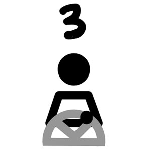
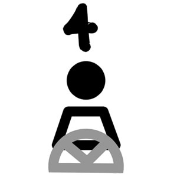

At the first level, you have to “co-drive” with your car. It can regulate its own speed or hit the brakes, but you must have your hands on the wheel and your eyes on the road, ready to take over anytime.

At the next level, you can now rest your hands a little as your car is now able to steer the wheel, but your hands must still be on the wheel, ready to take over as this level is still largely dependent on the human driver.

The third level allows you to take your eyes off the road for some time to text or watch movies. If there is an emergency situation, your car will alert you to start driving.

When we go to the fourth level, things are more relaxed - you can take a nap or leave your seat, but only within approved areas and conditions.

And, finally, the fifth level requires no intervention from your side.
Well, then why are we still stuck behind our wheels? Despite the optimistic picture the new technology paints, there are still many unanswered questions. Who will be the one to blame in accidents that happen? What if your car is hacked?
Self-driving cars might also make certain jobs like drivers and car insurance specialists obsolete. AV technology might also cause disparities between different social groups - these vehicles are not able to recognize dark-skinned pedestrians. The technology will also be likely expensive when it first hits the roads - causing a disparity between people with different income levels.
However, with its many promises and the amount of current research and investment in this field, autonomous vehicles will likely become part of our lives sooner or later. Explore our interactive website for more information on the ethics, safety, impact and research related to self-driving cars.